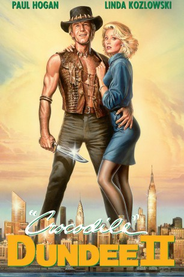

gesehen am 22.07.2015
gesehen am 22.07.2015Alternativ: Crocodile Dundee II (Englischer Titel) gesehen am 22.07.2015
 
 IMDB-Wertung: 5.5 / 10
IMDB-Wertung: 5.5 / 10  Metascore:
Metascore: 
Gerade als Mick Dundee anfängt, sich in New York zu langweilen, wird seine Freundin Sue über ihren Ex-Mann in eine Drogenaffäre verwickelt. Dieser hat ihr Bilder des Drogenbosses Rico zugesandt, die den Ganoven hinter Gitter bringen können. Nun sind die Lateinamerikaner hinter Sue und Mick her. Eine Entführung seiner Geliebten kann Mick in letzter Sekunde verhindern. Aus Sicherheitsgründen zieht sich das Paar dann lieber in den australischen Busch zurück. Als die Ganoven dennoch folgen, spielt Mick in seinem Revier sein Spiel mit den Ausländern und überwältigt sie schließlich.
Jahr: 1988
Dauer: 108 Minuten
FSK: 12
Land: Australien Studio: CIC VideoTonspuren: DD2.0 - ,
Untertitel:
Auflösung: 720p (1280x544) Größe: 4485 MB
Genre: Action, Komödie, Abenteuer
Regisseur: John Cornell
Drehbuch: Paul Hogan, Paul Hogan, Brett Hogan
Soundtrack: Peter Best
Darsteller:
 Paul Hogan als Michael J. 'Crocodile' Dundee
Paul Hogan als Michael J. 'Crocodile' Dundee Juan Fernández als Miguel
Juan Fernández als Miguel Charles S. Dutton als Leroy Brown
Charles S. Dutton als Leroy Brown Kenneth Welsh als Brannigan
Kenneth Welsh als Brannigan Stephen Root als DEA Agent, Toilet
Stephen Root als DEA Agent, Toilet Dennis Boutsikaris als Bob Tanner
Dennis Boutsikaris als Bob Tanner Carlos Carrasco als Garcia
Carlos Carrasco als Garcia Luis Guzmán als Jose
Luis Guzmán als Jose Gregory Jbara als Young Cop
Gregory Jbara als Young Cop Susie Essman als Tour Guide
Susie Essman als Tour Guide Doug Yasuda als Cato, Kung Fu Tourist
Doug Yasuda als Cato, Kung Fu Tourist Tatyana Ali als Park Girl
Tatyana Ali als Park Girl Alberto Vazquez als Rico's Guard
Alberto Vazquez als Rico's Guard Colin Quinn als Onlooker at Mansion
Colin Quinn als Onlooker at Mansion Al Cerullo als Helicopter Pilot
Al Cerullo als Helicopter Pilot Anthony Ruiz als Apartment Hitman
Anthony Ruiz als Apartment HitmanDatei: X:\4-Tetralogie(A-K)\Crocodile Dundee\Crocodile Dundee 2 (1988, FSK12, 1280x544).mkv seit 14.07.2015
Festplatte: HD Collection-3(N-Z)-6(A-Z)
 Es gibt insgesamt 7 Filme in der Gruppe '4-Tetralogie(A-K)\Crocodile Dundee'
Es gibt insgesamt 7 Filme in der Gruppe '4-Tetralogie(A-K)\Crocodile Dundee'